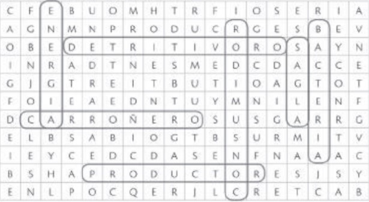
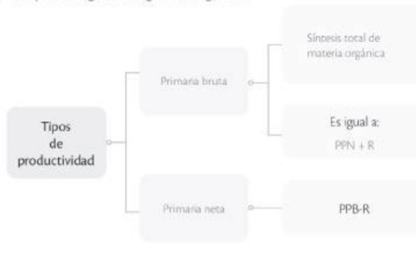

Respuesta de Actividades del Libro de Noveno de Ciencias Naturales
Elija la Unidad:
1.¿Cuáles son los tejidos vegetales que presentan más divisiones celulares que los demás? ¿Por qué?
El tejido meristemático, porque es el encargado del crecimiento de las estructuras tanto a lo largo como a lo ancho.
2. Establece dos diferencias entre los tejidos vasculares y los tejidos fundamentales.
Los tejidos vasculares cumplen con funciones de transporte de sustancias; los tejidos fundamentales cumplen con funciones de almacenamiento, fotosíntesis y soporte.
El tejido vascular se compone de dos tipos de tejidos, xilema y floema, y el tejido fundamental, por tres tipos de tejidos: colénquima, parénquima y esclerénquima.
3.Menciona tres funciones del tejido dérmico que son vitales para la supervivencia de las plantas.
El tejido meristemático, porque es el encargado del crecimiento de las estructuras tanto a lo largo como a lo ancho.
5.¿Qué función cumplen los estomas en las hojas de las plantas?
Permiten el intercambio de gases. Por los estomas ingresa CO, y sale oxígeno y vapor de agua.
6. Enumera las partes que conforman el estoma.
Células oclusivas, ostiolo o poro, células acompañantes
7.¿Para qué se realizó esta experiencia?
Para observar qué importancia tiene los pelos absorbentes
8. ¿Qué prueban los resultados obtenidos?
Prueban que los pelos absorbentes son importantes en la absorción de agua.
9.¿Por qué es importante el agua para los musgos?
Porque mantiene erguidas las plantas transportan nutrientes disueltos en ella y es indispensable para su producción.
10.Completa las siguientes frases con el término correcto.
• Los haces vasculares están conformados por grupos de vasos .
• El xilema transporta la savia bruta.
• Las sales minerales se encuentran en el suelo y entran a la planta a través de las .
• Los elementos del tubo criboso del floema pierden organelos para facilitar el movimiento de la savia elaborada
11. Indica cuáles son los productos de la fotosíntesis.
Son glucosa y oxígeno (6CO2 + 6H2O → C6H12O6 + 6O2)
13.¿Qué características presentan las células observadas?
Se están dividiendo, los núcleos no son visibles y se puede observar cromosomas. Hay células que se están separando en dos.
14.¿Qué significa el término lignificado?
Tejido en donde se deposita lignina que se convierte en un tejido vegetal endurecido, de estructura leñosa.
15.Compara los tejidos fundamentales esclerénquima y colénquima.
Los dos son tejidos de sostén.
El colénquima está formado por células vivas y el esclerénquima por células muertas.
El colénquima es flexible y el esclerénquima es rígido.
Observa al microscopio.
¿Qué clase de tejido observas?
Tejido muscular estriado.
¿Cómo es la estructura del tejido?
Posee fibras alargadas para facilitar la contracción y relajación del músculo, así produce el movimiento.
Observación de células escamosas epiteliales.
a. Frota con un palillo de dientes la cara interna de la mejilla con suavidad.
b. Deposita la sustancia extraída en el centro de un portaobjetos.
c. Coloca una gota de solución salina y una gota de azul de metileno.
Mezcla cuidadosamente.
d. Cubre la placa portaobjetos con el cubreobjetos.
e. Observa en el microscopio.
f. Dibuja y rotula las estructuras.
g. ¿Qué tipo de tejido epitelial observaste?
Tejido epitelial de revestimiento.
18. Si tu casa es tu hábitat, ¿cuál es tu nicho?
Su nicho es ser fijo y ayudar en algún oficio de la casa.
19.Coloca (F) frente a las afirmaciones falsas y (V) frente a las verdaderas.
a. Los consumidores terciarios son los encargados de reciclarlos nutrientes.
Falso
b. Los animales herbívoros son consumidores terciarios.
Falso
20.Encuentra en la siguiente sopa de letras siete términos asociados al papel de los organismos en los ecosistemas.

21.Las hormigas de la especie Acervorum leptothorax viven en colonias donde hay múltiples reinas. ¿Cómo se organizan estas colonias para no afectar su funcionamiento?
Se organizan según su parentesco para disminuir así la posibilidad de competencia.
22. Imagina que a un mismo árbol llegan dos herbívoros de diferentes especies. ¿Qué puede suceder entre ellos? Explica.
Puede presentarse competencia por espacio y por alimento hasta que la más fuerte desplace a la débil.
23.¿Cómo la competencia intraespecífica puede regular el tamaño de las poblaciones?
Al presentarse competencia por espacio o alimento, una de las poblaciones disminuye el número de sus individuos y con ello regula su tamaño.
26. Indica y describe el tipo de relación que se presenta en cada imagen.
a.Gregarismo, las gacelas permanecen juntas y esto les permite ayudarse.
b. Depredación, la garza se alimenta del pez.
27. ¿Cómo pueden diferenciarse?
Los colores de la serpiente coral son mas fuertes; el anillo amarillo o blanco tocan el rojo en la coral y el anillo negro separa al blanco o amarillo en la falsa coral.
28. ¿Qué ventajas representa para la falsa coral parecerse a la coral?
La falsa coral reduce la presión de selección para ser cazada, pues los depredadores la confunden con la coral, la cual produce un potente veneno.
29. Escribe cuáles organismos aparecen de cada nivel trófico.
Primer nivel trófico productores: fitoplancton y zooplancton.
Segundo nivel trófico consumidores primarios pequeño pez.
Tercer nivel trófico consumidores secundarios pez predador.
Cuarto nivel trófico consumidores terciarios ballenas y otros mamíferos marinos.
29. Escribe cuáles organismos aparecen de cada nivel trófico.
Primer nivel trófico productores: fitoplancton y zooplancton.
Segundo nivel trófico consumidores primarios pequeño pez.
Tercer nivel trófico consumidores secundarios pez predador.
Cuarto nivel trófico consumidores terciarios ballenas y otros mamíferos marinos.
31. Realiza las siguientes actividades sobre los niveles tróficos.
b. Observa la siguiente cadena alimenticia:
Maíz → Rata → Serpiente → Águila
¿Cuántos organismos productores hay?
1
¿Cuántos organismos heterótrofos identificas?
3
Nombra el/los organismo(s) que se encuentran en:
Primer nivel trófico productores
Maiz.
Segundo nivel trófico consumidores primarios
Rata.
Tercer nivel trófico consumidores secundarios
Serpiente.
Cuarto nivel trófico consumidores terciarios
Aguila.
c. ¿Por qué en las relaciones alimentarias se establecen flujos de materia y energía?
Porque entre los organismos se transfiere alimentos que es materia y los alimentos dan energía.
32. Completa el siguiente organizador gráfico.

De acuerdo con el siguiente esquema responde.
a. ¿Cuál es la principal fuente de energía de un ecosistema?
El sol
b. ¿Las flechas rojas indican el flujo de energía o de materia? Explica.
De energía
c. ¿En qué forma los productores pierden energía?
Calor
d. ¿Cuáles son los niveles tróficos de un ecosistema? ¿Cuál es la fuente de energía de cada uno?
Productores: obtienen energía directamente del sol.
Consumidores: obtienen energía de los productores.
Descomponedores: obtienen energía de todos los niveles.
34. ¿Cómo afectan estas actividades a la estabilidad de los ciclos biogeoquímicos?
A. El vertimiento de aguas negras en las quebradas y ríos contamina y altera la vida de los organismo de allí habitan.
B. La emisión de gases de los vehículos altera la composición normal de la atmósfera.
C. La tala de árboles disminuye la concentración de oxígeno disponible, pues desciende el número de árboles.
35.¿Por qué se sostiene que la materia en los ecosistemas se recicla?
Porque la materia orgánica pasa de un organismo a otro, luego es transformada a materia inorgánica y vuelve a ser aprovechada por los organismos.
36. ¿Qué significan los prefijos bio y geo?
Bio: vida
Geo: tierra.
37.¿Qué función cumple el Sol en los ciclos biogeoquímicos?
El sol activa de forma directa o indirecta los ciclos biogeoquímicos. El sol es una fuente de energía para los procesos que ocurren en los ciclos.
38. ¿Qué diferencia hay entre el flujo de materia y el flujo de energía?
El flujo de materia es cíclico, el flujo de energía se da en una sola dirección.
39.¿Qué diferencias puedes observar en estas dos imágenes en relación a la presencia de organismos fotosintéticos?
En la imagen A. Hay abundancia de organismos fotosintéticos: vegetación, luminosidad, humedad. Y en B hay muy pocos.
40. ¿Qué condiciones pueden ser las causantes de estas diferencias?
La cantidad de luz, solar, la disponibilidad de agua, la cantidad de CO2 en el aire que se puede usar para que las plantas hagan más fotosíntesis, la humedad del ambiente.
41.Establece las ecuaciones que representan los procesos de fotosíntesis y respiración celular.
Fotosíntesis: 6CO2 + 6H2O + luz → C6H12O6 + 6O2
Respiración celular: C6H12O6 + 6O2 → 6CO2 + 6 H2O + ATP
42. Las reacciones químicas se clasifican en función de la energía: si la requieren son endotérmicas y si la producen se denominan exotérmicas. Clasifica las reacciones de la fotosíntesis y la respiración celular en función de la energía.
Endotérmica: Fotosintesis
Exotérmica: Respiración celular.
43. Utiliza los organismos arriba citados para construir una cadena trófica de manglar.
Fitoplancton → peces vegetarianos → águila pescadora → garza flecha descomponedores.
44. Los manglares se encuentran amenazados por la deforestación. ¿En qué forma se vería afectada la cadena trófica?
Al eliminar los árboles de mangle se elimina a los productores, que son la base de la cadena alimentaria; además, estos árboles sirven de hábitat para muchos organismos. Muchas especies no tendrían alimentos, podría haber sobrepoblación de especies al haber sido eliminado el hábitat de otras especies.
45.Señala tres características de los árboles de mangle.
Los manglares son plantas leñosas.
Toleran el agua salada y están adaptados a vivir en zonas pantanosas.
Tienes raíces aéreas que le ayudan a sujetarse al suelo.
Las semillas son flotantes lo que permite la dispersión.
46.¿Cómo funciona la cadena trófica en el manglar?
Comienza con los detritos de hojas de manglar de los que se alimentan bacterias y hongos, así como consumidores herbívoros y omnívoros.
47.¿Por qué es importante el manglar para el equilibrio del planeta?
Porque el manglar es el hábitat de especies animales y vegetales únicas en el planeta. También porque es un ecosistema que actúa como filtro del agua antes de su desembocadura en el mar.
48. Averigua qué actividad económica se desarrolla en el manglar. Menciona
los beneficios y los perjuicios que su práctica pueda ocasionar.
Se puede mencionar la actividad camaronera. Un beneficio es el sustento económico de muchas familias del lugar. Un perjuicio es la destrucción del manglar, pues las camaroneras alteran el ecosistema y viertes químicos y desechos en el agua.
UNIDAD #2: CAMBIOS EN LOS SERES VIVOS
2. Observa la siguiente imagen y responde las preguntas.
a.¿Qué función cumplen las estructuras que se presentan en la imagen?
El brazo en el humano sirve para sujetar cosas, escribir, pintar; la pata en el gato opara movilizarse. La aleta en la ballena para nadar.
b. A pesar de las diferencias que presentan estas extremidades, la constitución de todas ellas es muy similar. ¿Cómo pueden entonces explicar ¿Cuáles son las diferencias que presentan?
Se deben a procesos de evolución. A pesar de las diferencias que presentan estas extremidades, la constitución de todas ellas es muy similar.
c. ¿Cómo puede entonces explicar se las diferencias que presentan?
Son homólogos, descienden de un antecesor común pero su forma y función es diferente.
3.¿Con cuál animal tiene más parecido el ser humano según las proteínas de la sangre?
Con el chimpancé.
4.De acuerdo con el porcentaje de aglutinación de la tabla, ¿qué animales son los más diferentes al ser humano?
El caballo y a las aves.
5. ¿A qué animal se parece más el ser humano: al orangután o al gorila? ¿Por qué?
A los gorilas, ya que el gorila tiene un 64% de aglutinación y el orangután un 42%
6. ¿Qué criterio se tiene en cuenta para determinar si un grupo de órganos son análogos u homólogos?
Su origen y su función.
7. Consulta qué organismos fueron Anomalocaris y Hallucigenia, dónde se encontraron sus fósiles y haz un dibujo en tu cuaderno que explique a cuáles seres actuales se parecen y por qué.
Anomalocaris y hallucigenia son dos géneros de invertebrados extintos descubiertos en la Fauna de Burguess Shale. Hallucigenia ha sido relacionado con los onicóforos, un grupo de invertebrados de cuerpo blando conocido como gusanos de terciopelos, Anomalcoris ha sido relacionado con los artrópodos.
8.Completa el siguiente crucigrama sobre las evidencias de la evolución.
1. fósiles
2. icnofósiles
3. paleoambiente
4. filogenia
5. proteómica
6. homólogos
7. biogeografía.
8. ontogenia.
9. embrión
10. análogos.
9.¿Por qué fue importante para el desarrollo de la evolución la inclusión de la genética?
Porque aportó las explicaciones al origen de la variabilidad genética y permite comprender cómo se transmiten las características de una generación a otra.
10. ¿Qué significa que todos compartamos un ancestro común?
Significa que los seres vivos procedemos de otros seres vivos y que de ellos heredamos nuestras características.
11. ¿Por qué desaparecieron los dinosaurios si estaban bien adaptados al ambiente en el que vivían?
En el caso de los dinosaurios, el ambiente cambió drásticamente por el impacto del meteorito, lo cual posiblemente fue la causa de su desaparición
12. Consulta por qué el tamaño de un bebé al nacer es promedio; revisa cuál es la medida promedio y qué sucede cuando nacen más grandes o más pequeños. ¿Podría ser esta una característica moldeada por la selección natural? Si es así, ¿qué tipo de selección habría operado?
El tamaño promedio de un bebe al nacer es entre 48 y 52 cm; cuando son más grandes puede haber dificultad para el parto vaginal y se requiere de una cesárea. En cambio, cuando son más pequeños pueden tener bajo peso y requieren cuidados especiales como los del plan canguro. Si puede ser una característica moldeada por selección natural y en ese caso opera la selección estabilizadora, ya que se seleccionó la característica intermedia
La mariposa monarca se alimenta de asclepias, una planta que contiene sustancias químicas de sabor amargo. Las aves que comen a las mariposas monarca se enfermaron por la presencia de las sustancias de las asclepias y, en un futuro, evitarán comer a las mariposas. Las mariposas viceroy son muy similares en aspecto a las mariposas monarca.
a. ¿Qué tipo de adaptación ha desarrollado la mariposa viceroy?
Una adaptación morfológica mimetismo.
b.¿De qué manera estas adaptaciones han ayudado a la supervivencia
de las mariposas viceroy?
Los animales no las van a comer ya que parecen mariposas monarca
14.El DDT fue un insecticida muy utilizado a lo largo de los años. Conforme pasó el tiempo perdió su efectividad sobre los insectos.
a. Sugiere a qué pudo deberse este fenómeno.
Debe haber existido un grupo de organismos que pudieron sobrevivir al DDT y lograron heredar esta característica a sus descendientes.
b. ¿De qué manera esta situación puede ser favorable y desfavorable al mismo tiempo?
Para los insectos es favorable, ya que el insecticida no los elimina. Para los individuos que desean controlar los insectos es desfavorable, pues el insecticida pierde la efectividad y se requiere de otros productos.
17. Completa la información sobre las bacterias responsables de cada enfermedad y sus principales características. Observa el ejemplo.
--Tétano
Bacteria: Clostridium tetani.
Parálisis de los músculos responsables de la respiración.
--Peste
Bacteria: Yersinia pestis.
Afecta a la sangre, glándulas linfáticas y pulmones.
--Tuberculosis.
Bacteria: Mycobacterium tuberculosis
Produce tos y daña los pulmones.
--Cólera
Bacteria: Vibrio Cholerae: Daño intestinal.
Diarrea abundante
--Baculisma.
Bacteria: Clostridium botulinum.
Intoxicación alimentaria. Impide que pasen las señales nerviosas a los músculos.
--Disentería
Bacteria: Bacilo del grupo de las Shigella.
Diarrea, deshidratación
18 Imagina que te causas una herida profunda con un clavo que se encontraba en el suelo.
a. ¿Qué enfermedad podrías contraer?
Tétanos.
b. ¿Qué condiciones se requieren para que puedas contraer esta enfermedad?
Que el clavo esté sucio y haya estado en contacto con el suelo, pues las esporas de la bacteria podrían estar presentes e ingresar a tu cuerpo por medio de la herida
c. ¿De qué modo se puede prevenir el aparecimiento de esta enfermedad?
Se debe verificar si está vigente la vacuna que se coloca a los niños y se refuerza cada diez años; si no está vigente se la debe aplicar.
19. Indica el significado de los términos:
a. Infección.
Contaminación causada por un microorganismo patógeno.
b. Inflamación.
Reacción que se presenta por la presencia de patógenos, sustancias irritantes e incluso golpes, se observa aumento de volumen, enrojecimiento, dolor y calor.
20. Cita tres prácticas que pueden evitar el contagio de enfermedades bacterianas.
Lavarse las manos constantemente, no compartir artículos de uso personal, evitar estar junto a personas que estornudan o tosen sin cubrirse, no entrar en contacto con fluidos.
23. Señala la respuesta correcta. Los hongos parásitos se alimentan de:
c. Otros organismos a los que causan daño
24. ¿Por qué los hongos no producen su propio alimento?
Porque son organismos heterótrofos, o sea que no son capaces de elaborar sustancias orgánicas a partir de sustancias inorgánicas.
25. Señala qué similitudes hacían que las plantas y los hongos fueran clasificados en un mismo grupo.
La ausencia de movimiento y la forma de crecimiento.
26. Completa la tabla.
| Caracteristicas |
Hongos |
Plantas |
| Pared celular |
Quitina |
Lignina |
| Nutricion |
Heterotrofo |
Autotrofo |
| Locomocion |
Sesil |
Sesil |
27. Haz una lista de acciones que puedes practicar en casa para evitar la proliferación de microorganismos en los alimentos.
Lavar los alimentos antes de consumirlos.
Lavar muy bien las manos antes de consumir o manipular alimentos.
Conservarlos adecuadamente; ya sea refrigerados o en lugares secos y limpios.
28. Explica en un párrafo si todas las bacterias y los hongos que se encuentran en los alimentos son perjudiciales para el ser humano.
No todas las bacterias y hongos de alimentos causan daño, algunos se utilizan para ayudar a su producción como las bacterias que fermentan el yogur y las levaduras con las que se elaboran vino, cerveza y pan.
29. Karen tomó diferentes alimentos; tras unos días a la intemperie encontró los siguientes resultados.
a. Carne descompuesta.
b. Frutas descompuestas.
c. Jugo con un ligero olor a alcohol.
¿Qué tipo de microorganismo apareció en cada uno de los alimentos?
La carne se descompone por presencia de bacterias como la Salmonella sp.
Las frutas presentan moho.
El jugo se fermenta por presencia de levaduras.
30. ¿Por qué una de las recomendaciones más importantes para prevenir la amebiasis es lavarse bien las manos luego de usar el baño?
Las amebas se encuentran en la materia fecal, la cual puede contaminar alimentos y el agua.
31. ¿Por qué es peligroso contraer toxoplasmosis durante los primeros meses de embarazo?
Puede provocar malformaciones en el bebe(feto).
32. Establece semejanzas y diferencias entre la enfermedad del sueño y la enfermedad de Chagas.
Las dos son producidas por organismos del género plasmodium y se denomina tripanosomiasis. La enfermedad del sueño se presenta en África y la de Chagas en América Latina. El vector de la enfermedad del sueño es la mosca tse-tse y la de Chagas son los insectos. La enfermedad de Chagas produce alteraciones cardíacas, digestivas y nerviosas. La enfermedad del sueño produce fiebre, dolor de cabeza, picazón y dolores de las articulaciones, y afecta el sistema nervioso central.
33. Las personas que preparan los alimentos tienen una gran responsabilidad
en la prevención de la transmisión de enfermedades. Señala seis prácticas que deben ser tomadas en cuenta.
Lavarse las manos de forma constante.
No tocarse la boca, los ojos o la nariz mientras cocina.
Mantener las tablas de cortar y areas de preparacion de alimentos limpias y secas
Separar los alimentos crudos de los cocinados.
Mantener los alimentos refrigerados.
Usar agua potable, filtrada y limpia.
Lavar muy bien los alimentos que se consumen crudos.
UNIDAD #2: LA FUERZA DE LA GRAVEDAD.
1. Completa la siguiente tabla.
|
Masa |
Peso |
| Instrumento que se usa para medir |
Balanza |
Newtometro |
| Tipo de magnitud |
Escalar |
Vectorial |
| Otras unidades de la medida |
toneladas, libras |
Kg-fierza, dinas |
2. Una persona tiene una masa de 55 kg en la Tierra y en la Luna; sin embargo, el peso en la Luna es menor. ¿A qué se debe esta diferencia?
La fuerza con la que la Luna atrae al cuerpo es menor. La gravedad en la Luna es menor.
4. Considerando que la fuerza que ejerce la mano es la misma en los tres casos, explica en cuál imagen hay mayor aceleración.
En la primera imagen, ya que la aceleración es inversamente proporcional a la masa de los cuerpos.
5. Marca cuál de las siguientes situaciones presenta ejemplos de la segunda ley de Newton.
a. Empujar un carro de supermercado.
b. Golpear una bola de golf para que ingrese al hoyo.
6 Calcula lo siguiente:
a. Calcula la fuerza de atracción entre dos personas. Asume que los dos cuerpos tienen la misma masa (100 kg) y que la distancia entre ellas es r = 1 m. El valor de G = 10210 N m2/kg2
F=10
6N
b. ¿Qué podrías concluir respecto al valor obtenido?
La fuerza de atracción entre dos cuerpos es muy pequeña.
7. Analiza las siguientes situaciones e indica cuáles presentan sensación de ingravidez.
b. Un esquiador en pleno salto.
c. Una paracaidista en descenso antes de abrir su paracaídas.
e. Una persona caminando.
8. Si se deja caer una manzana en la Tierra y luego la manzana se lleva a Júpiter y se deja caer en ese lugar, ¿el peso de la manzana cambia?, ¿por qué?
Si aumento porque la fuerza gravitatoria es directamente proporcional al producto de las masas.
9. Si dejas caer una manzana en la Tierra que pesa normalmente 100 N, al llevártela a un lugar que esté al doble de distancia del centro de la Tierra la manzana pesará solo la cuarta parte, es decir, 25 N. ¿Por qué?
Porque a mayor distancia es menor la fuerza gravitatoria. La fuerza gravitatoria es inversamente proporcional a la distancia.
10. Selecciona la opción que consideres correcta.
Para los siguientes dos casos de caída libre se puede afirmar que...
a. la aceleración del movimiento para ambos cuerpos es g.
11. Completa en el siguiente mapa conceptual las características que debe cumplir un cuerpo celeste para ser considerado un planeta.
Un planeta:
Gira alrededor del Sol.
Su gravedad le da forma esférica.
Su gravedad aleja objetos cercanos a su órbita.
14. Explica, por qué si la fuerza de la gravedad actúa sobre todos los cuerpos en proporción con sus masas, los cuerpos más pesados no caen más rápido que los livianos.
Porque los dos cuerpos caen con la misma aceleración. La relación fuerza-masa en los dos cuerpos es igual.
15. Explica dónde sería más fácil levantar un saco de cemento: en la Luna o en la Tierra.
En la Luna porque la fuerza de gravedad es menor.
16. Clasifica los planetas del sistema solar en la siguiente tabla:
| Planetas interiores |
Planetas exteriores |
| Mercurio |
Jupiter |
| Venus |
Saturno |
| Tierra |
Urano |
| Marte |
Neptuno |
17. Define el término alunizaje.
Descenso controlado de un vehículo sobre la superficie lunar.
19 Si los planetas describen órbitas alrededor del Sol.
a. Indica cómo Newton estableció que debía haber una fuerza que actúa sobre ellos.
Porque todos los cuerpos que describen una curva están sujetos a una fuerza centrípeta.
b. ¿Cuál es el origen de esta fuerza?
El sol.
21. Levanta los dedos pulgar, índice y medio y forma un triángulo.
• Coloca una liga gruesa entre el pulgar y el índice.
• Coloca una liga normal entre el pulgar y el dedo medio.
• Coloca una liga delgada entre el pulgar y el índice.
a. Observa y describe lo que sientes cuando mueves los dedos.
Los dedos tiran entre ellos.
b. ¿Qué fuerzas estás simulando?
Las fuerzas gravitacionales entre el Sol, La Tierra y la Luna.
Liga gruesa: Sol y Tierra.
Liga normal: Sol y Luna.
Liga delgada: Luna y Tierra.
Traza una línea del tiempo con los tres eventos que se señalan en el texto
anterior y destaca su importancia.
1. Galileo(1546-1642): Uso del telescopio, se pueden observar estrellas, la Luna y algunos planetas.
2. Siglo XIX: Se conoce la composición química de los cuerpos celestes.
3. 1957: Se pone en órbita el primer satélite, lo cual marca un antes y un después en la ciencia espacial.
23. Resume en la siguiente rueda de atributos los aportes científicos de Pedro Vicente Maldonado.
Aportes científicos de Pedro Vicente Maldonado:
Colaboró en el escrito sobre la Historia Natural de la Amazonia.
Logró medir el arco meridiano terrestre.
Sentó las bases del Sistema Métrico Decimal.
Elaboró la Carta Geográfica.
Trazo y participó en la construcción de la vía Quito-Esmeraldas.
UNIDAD #4 : NUESTRO UNIVERSO.
1. Describe tres propiedades físicas de los elementos:
--Hidrógeno:
*Elemento gaseoso abundante en el espacio
*Elemento más liviano.
*Está presente en los seres vivos
--Helio:
*Elemento gaseoso, poco reactivo.
*Se conoce como gas noble.
*Abundante en el espacio.
*Se utiliza para elevar globos.
--Oxígeno.
*Elemento gaseoso, forma parte del 21% del aire en la Tierra.
*Es indispensable para la combustión en la Tierra.
*Permite la vida de organismos aerobios.
--Nitrógeno:
*Elemento gaseoso,inerte.
*Abundante en el aire 78%.
*Forma parte constitutiva de las proteínas.
2. Describe cómo se forma una estrella.
Las estrellas nacen en las nebulosas. Las nubes se contraen debido a la fuerza de gravedad y se rompe en pedazos pequeños, en donde ocurren reacciones que aumentan la temperatura y la densidad, hasta transformarse en una estrella.
3. Indica por qué mueren las estrellas.
El hidrógeno que sirve como combustible para generar las reacciones que liberan energía se agota.
4. Busca seis términos relacionados con las estrellas en la siguiente sopa de letras.
5. La materia que forma una estrella puede haber sido parte de otra estrella que murió hace miles de millones de años, ¿puede ser esto posible?
Si porque los materiales que liberan las supergigantes dan origen a nuevas estrellas e incluso planetas.
6. ¿Qué son los neutrones?
Son partículas subatómicas que se encuentran en el núcleo de los átomos y no tiene carga.
7. El astrofísico Carl Sagan afirma que “el ser humano está hecho con material de estrellas”, ¿qué opinas acerca de esta aseveración? Según tu criterio, ¿en qué se basa el científico para sostener esto?
Los elementos desde el espacio pueden haber llegado a la Tierra.
8. Completa las siguientes oraciones con las palabras que se indican en cada caso.
a. Los espectroscopios son utilizados para medir las propiedades de la luz
b. La temperatura determina el color de las estrellas. Las rojas están en un rango de temperatura de entre 2 000 y 3 500 °C, en tanto que las más calientes son de color azul.
10. Explica por qué la Estrella Polar es usada por los navegantes para orientarse.
Es una estrella muy brillante y visible ubicada casi directamente sobre el Polo Norte. casi inmovil.
11. Existen estrellas de varios tamaños, el Sol es una estrella amarilla de tamaño mediano. ¿Qué pasaría si Betelgeuse fuera la estrella del Sistema Solar?
a. Indaga acerca de la estrella Betelgeuse: qué tipo de estrella es, qué tamaño tiene, compara con el tamaño del Sol.
Se llama también Orionis, es una estrella brillante del tipo supergigante roja. Se halla en la constelación de Orión y es la novena estrella más brillante del cielo. Su tamaño es 600 veces mayor que el Sol.
12. Toma un globo de fiesta redondo y pinta unos puntos con marcador. Infla una tercera parte del globo y observa la posición de los puntos, finalmente infla el globo totalmente y vuelve a observar la posición de los puntos.
a. Describe lo observado.
Se puede observar como los puntos se separan unos de otros conforme el globo se agranda.
b. ¿Qué representan los puntos y el aumento de tamaño del globo?
Las galaxias y el universo en expansión. Como las galaxias van alejándose unas de otras.
Completa el siguiente crucigrama.
1. Hidrógeno.
2. Neutrones.
3. Rojo
4. Supernova.
5. Nova.
6. Galaxias.
7. Nebulosas.
8. Polar.
9. Paralaje.
10. Estrella.
14. Completa la siguiente frase con los términos que se presentan a continuación.
Nuestra galaxia se llama
vía láctea, su forma es
espiral y está formada en su interior por
estrellas entre otras.
Andrómeda es la galaxia más próxima.
15. ¿Qué discusiones ha generado la construcción de tantos observatorios en
el volcán Mauna Kea?
Se ha planteado que tanto observatorios pueden afectar la biodiversidad y el suelo de la zona por la construcción de carreteras y el flujo de personas que llegan al lugar. Además, es una zona que los habitantes tienen destinada para sus ritos sagrados.
16. Responde verdadero(V) o falso(F) a cada enunciado
a. El nombre científico de una estrella fugaz es meteoro.
Verdadero
b. Todos los planetas son visibles a simple vista en el cielo.
Falso
c. Los satélites permiten obtener información del espacio.
Verdadero.
17. Define el término estrella fugaz y señala cuál es su nombre adecuado.
Son trozos de polvo o roca que se queman antes de tocar la superficie de la Tierra, su nombre adecuado es meteoro.
20. Define el término ‘menguar’ en general y en referencia a la Luna.
Disminuir, achicar. En referencia a la Luna disminuir la parte iluminada.
22. Calcula el periodo orbital del cometa Halley y predice cuándo será visible nuevamente desde la Tierra.
Periodo orbital alrededor de 77 años. Será visible en el año 2063.
Lee el siguiente extracto tomado
Los cometas
En el pasado lejano, los cometas hacían que la gente se sintiera intimidada e inquieta. Eran considerados estrellas "con el cabello largo" que aparecían en el cielo en forma imprevisible e imprevista. Algunos observadores clásicos decían que un cometa parecía una espada ardiente que atravesaba el cielo. Los astrónomos chinos guardaron registros de los momentos que aparecían, en qué lugar e ilustraron las formas de las colas durante siglos.
a. ¿Qué importancia pueden tener estos registros?
Permitieron a los astrónomos de generaciones posteriores, contar con información valiosa para establecer conclusiones. Otras respuestas posibles.
b. ¿Por qué crees que los observadores generaron estos registros?
Respuesta libre. Intuición, conocían la importancia del registro de datos, tenían habilidades científicas.
24. A partir de la imagen del espectro electromagnético presentada en la página anterior, responde las siguientes preguntas.
a. ¿Qué color de la luz visible tiene la frecuencia más alta?
Violeta
b. ¿Qué tipo de radiación presenta las ondas con menor longitud?
Rayos Cósmicos.
c. Coloca los siguientes tipos de radiación: IR, UV, EV en orden descendente, en función de su frecuencia.
UV > EV > IR
d. ¿Cuál es el rango de longitud de onda que nuestros ojos son capaces de percibir?
Entre 400 y 700 nm de longitud.
e. ¿Qué tipo de ondas son las responsables de generar el fenómeno de
la fluorescencia?
Las ondas ultravioleta.
UNIDAD #5: ACCIÓN DEL SER HUMANO SOBRE LA NATURALEZA.
3. El petróleo es una mezcla de hidrocarburos, los cuales pueden ser separados por un proceso de destilación fraccionada. Indica qué compuestos se pueden obtener a partir de este proceso y ordénalos según su estado físico.
Gases como metano, etano, propano y butano. Líquidos como parafinas, nafta, éter de petróleo, gasolina, diesel, aceites lubricantes. Sólidos: asfalto, alquitrán.
4. ¿De dónde se origina el plástico?
El plástico es un polímero formado a partir de compuestos presentes en el petróleo(hidrocarburos).
5. ¿Por qué se sostiene que el petróleo se puede agotar, si se forma por la descomposición de compuestos orgánicos?
El proceso de formación del petróleo lleva millones de años, la velocidad es mayor al de reposición.
6. Señala qué situaciones han roto este equilibrio.
La deforestación para la utilización de suelos en otras actividades y la quema de combustibles fósiles.
7. Señala las sustancias que contienen el elemento carbono y son orgánicas.
b. Leche
c. Cáscaras de naranjas
d. Margarina
f. Vitamina C
8. Indica a partir de qué compuesto los organismos autótrofos elaboran los compuestos orgánicos.
Dióxido de carbono (CO
2).
9. Define el término polímero.
Compuesto de alto peso molecular formado por estructuras que se repiten(monómeros).
10. Coloca los términos correctos en las siguientes oraciones.
a. El
carbono presente en todos los
seres vivos.
b. El
oxígeno se encuentra disuelto en el
agua en el
aire.
c. El carbono se transfiere entre los
seres vivos a través de los
alimentos.
d. Los
restos de los organismos muertos quedan enterrados y por acción de la presion y la
temperatura se convierten en
petróleo, gas natural y carbón.
7. Cita tres actividades humanas que alteran el ciclo natural del carbono.
*Quema de combustibles.
*Deforestación.
*Actividades Industriales.
*Contaminación atmosférica que interfiere en las absorciones de CO2, por parte de las plantas.
8. Observa el gráfico que se presenta en esta página. ¿Qué puedes concluir respecto a la tendencia que se observa?
Un incremento de temperatura conforme pasan los años.
9. ¿Por qué el uso de transporte público o el uso compartido de auto(carpool) puede contribuir a la disminución de emisiones de gases de efecto invernadero?
El uso de combustibles disminuye, lo que disminuye la emisión de CO2, se optimiza el espacio del auto, no hay tanto autos, haciendo el mismo recorrido, el transporte público logra mover mayor número de personas, por lo que la contaminación por persona disminuye.
10. La preocupación frente al calentamiento global ha hecho que científicos de varias disciplinas desarrollen alternativas que disminuyan las emisiones de carbono. A continuación se presenta un ejemplo:
Indica otros ejemplos en donde la ciencia se encuentra desarrollando nuevas alternativas para cumplir con el objetivo de disminuir la emisión de gases.
Se podrían referirse a motores de combustión más eficientes, desarrollo de catalizadores para automóviles, desarrollo de nuevos combustibles, el hidrógeno como combustible, desarrollo de nuevos materiales como reemplazo de la madera, entre otros.
Observa las dos imágenes que se presentan del volcán Cotopaxi, ubicado en
los Andes ecuatorianos.
11. ¿Qué porcentaje de hielo estimas que ha perdido el volcán?
Alrededor de un 40%.
Responde falso (F) o verdadero (V) al final de cada frase.
a. Gracias a los cambios de latitud podemos gozar de montañas que tienen nieves perpetuas en el trópico.
Falso
b. El relieve de los continentes afecta directamente a las corrientes oceánicas.
Falso
c. El movimiento de las masas de aire, aunque son más livianas que las masas de agua, constituye uno de los factores que afecta las corrientes marinas.
Verdadero.
d. La zona seca se produce por una absorción de humedad del ambiente.
Verdadero.
9. Enumera en el siguiente organizador gráfico los factores que influyen en la dirección del movimiento de las corrientes marinas.
*Viento
*Densidad del agua.
*Efecto coriolis
*Relieves submarinos
*Temperatura del agua.
12. ¿Cuáles serán los mejores meses del año para la pesca en las costas ecuatorianas? Sustenta tu respuesta.
Julio, agosto y septiembre, por la presencia de la corriente de Humboldt en la costa
13. Escoge la respuesta adecuada. El fenómeno del Niño se da por:
c. cambios en el movimiento normal de las aguas del mar.
UNIDAD #6 : NUESTRO PLANETA.
1. ¿En dónde se ubica el bioma tundra?
En los polos norte y sur.
2. ¿Cuál bioma es el más extenso en América del Sur?
El bosque tropical
3. ¿Cuál piensas que es el bioma terrestre más extenso en el mundo?
El pastizal, sin embargo los estudiantes podrían justificar otras respuestas es una buena oportunidad para la indagación.
4. ¿Qué ubicación, características, flora y fauna presenta la Antártida?
Se encuentra en el polo sur, es un continente con una extensión de casi 14 millones de kilómetros cuadrados. Su temperatura promedio es alrededor de -10 a -30 grados celsius, tiene baja humedad, y un largo invierno donde la nieve cubre todo. La diversidad de la flora y fauna es baja, no tiene mamíferos terrestres. Básicamente se distinguen dos tipos de plantas con flores, el pasto antártico(Deschampsia antárctica) y el clavel antártico, además hay musgos, líquenes y hepáticas. El mar es una fuente importante de fitoplancton, que crece en la península antártica y en algunas islas antárticas.
Se encuentran en el mar algunos organismos marinos como focas, delfines, ballenas, cachalotes, entre otros.
En la siguiente imagen puedes observar los estratos de la selva húmeda tropical. Con base en ella responde.
A. Zona de árboles emergentes
B. Zona de dosel
C. Zona de sotobosque
5. ¿Qué tipos de plantas componen la comunidad vegetal de este bioma?
Árboles de diferentes tamaños, arbustos y hierbas.
6. ¿Qué tipo de animales crees que viven en cada estrato de la selva?
Venados, cebras, etc.
Destaca una característica del tipo de bosque que se presenta en las
imágenes.
a. Selva tropical, abundante vegetación, humedad.
b. Taiga, vegetación predominante las coníferas.
c. Bosque templado caducifolio, vegetación sauces y árboles que pierden sus hojas.
8. En muchos textos de ecología, sus autores consideran las praderas y las sábanas como un solo bioma, en cambio en otros se tratan por separado.
¿Cuál es la razón de esta diferencia?
Tanto praderas como sábanas se localizan en zonas muy cercanas, si bien el clima de la sabana es más tropical, las praderas son más templadas y secas, otras características son similares. La sabana se refiere más a África en tanto que las praderas a Norteamérica. Pero también se las puede analizar como un solo bioma.
9. Responde falso (F) o verdadero (V) al final de cada frase.
a. Los biomas son ambientes naturales.
Verdadero.
b. Un mismo bioma puede estar presente en diferentes países y continentes.
Verdadero
10. Completa las frases
a. La principal característica que comparten los desiertos fríos y cálidos es
la aridez del ambiente.
b. La biodiversidad en los desiertos es
baja.
c. Las plantas y animales han desarrollado
adaptaciones,
que permiten soportar la escasez de agua en los desiertos.
d. Las plantas en los desiertos tienen estructuras que
almacenan el agua.
11. Escoge la opción incorrecta. Un bioma se caracteriza por:
c. tener las mismas especies de plantas en todos los lugares donde se encuentra.
12. En general, la temperatura de un bioma es inversa a la latitud en la que se encuentra.
En general, la temperatura de un bioma es
inversa a la latitud en la que se encuentra.
13. ¿Qué datos serían suficientes para caracterizar un bioma?
Explica
El tipo de vegetación y la latitud en la que se encuentra el bioma.
14. ¿Cuál de los biomas presenta mayor cambio de temperatura durante el
año?
El bosque boreal o taiga, ya que varía desde los -25°C hasta la 14°C
15. ¿Qué lugares incluyen la región del Chocó?
Identifica
Se extiende desde la región del Darién, al este de Panamá, a lo largo del Pacifico colombiano, el noroccidente de Ecuador hasta la esquina noroccidental de Perú.
16. ¿Qué condiciones climáticas presentan los bosques secos y semiáridos de
Ecuador?
Tienen escasas lluvias y baja humedad. La temperatura en el día es alrededor de los 18°C y en la noche disminuye significativamente.
17. El género y la especie a la que pertenecía el Solitario Jorge y qué sucedió
cuando se murió.
El Solitario Jorge fue una tortuga gigante del género Chelonoidis abingdoni, cuando murió se extinguió su especie. Fue la tercera especie de tortugas gigantes que se han extinguido en estos tiempos.
18. Indica dos condiciones que favorecen la biodiversidad en los bosques montanos.
*La temperatura no es ni alta ni demasiado baja.
*Las diferentes altitudes.
*La disponibilidad de agua.
19. Existe una intención por parte de autoridades de muchas ciudades el establecer ‘ciudades verdes’.
a. ¿Qué significa eso?, ¿qué beneficios presentan?
Recuperar zonas dentro de las ciudades con vegetación nativa para que sean lugares de refugio de especies propias de los bloques montanos. Estos lugares favorecen al mantenimiento de la biodiversidad y proveerán a sus habitantes la oportunidad de mejorar su salud mental y física, y tener mayor sentido de identidad y pertenencia.
b. Señala lugares que cumplan con estas características en el lugar donde vives.
Parques, Jardines botánicos, reservas ecológicas ubicadas en las ciudades.
c. Se podría en tu institución educativa crear algún espacio verde, ¿qué finalidad podría cumplir? Realiza una lluvia de ideas.
Se puede referir a un invernadero, una huerta, entre otras con finalidad educativa para observar germinación, crecimiento de plantas, clasificación entre otras.
Se puede referir a un invernadero, una huerta, entre otras con finalidad educativa para observar germinación, crecimiento de plantas, clasificación entre otras.
Hojas secas que caen de los árboles. Aportan al suelo materia orgánica que puede ser descompuesta por bacterias y hongos.
22. Algunas personas suelen limpiar la hojarasca en los jardines, ¿piensas que esta práctica es adecuada? Sustenta tu respuesta.
No es adecuado, alteran el ciclo de la materia, quitan el sustrato de los descomponedores que permiten que los minerales se reciclen.
23. ¿Qué otros usos tiene el achiote?
Es utilizado por las comunidades para decorar su piel en las festividades y ceremonias.
24. Indica en qué región o regiones se encuentran los siguientes ecosistemas:
a. Páramos
región sierra.
b. Bosque húmedo tropical
región amazónica.
c. Bosque seco
región costa, insular y sierra.
d. Franja marino-costera
región costa.
e. Bosques húmedos del Chocó
región costa.